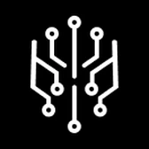
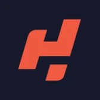
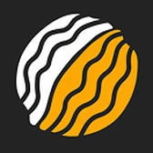
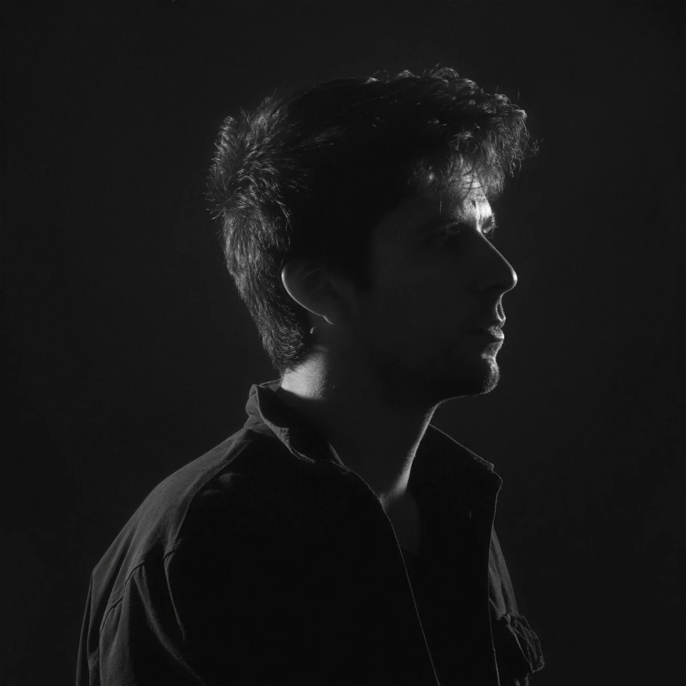

A few milestones from my path.
Some grades, some certificates, and a lot of late nights at Politecnico.
Proof that I don’t stop at the mockup. I design, prototype and ship full products with AI tools, which makes handoff faster and conversations with developers a lot more honest.
A selective program run by Politecnico di Milano and Torino, where I worked on multidisciplinary projects with engineers, architects and designers.
Plus an Erasmus at Mondragon Unibertsitatea in Spain, a leadership course at TU Delft and summer schools in France and Poland. Lots of trains, lots of workshops.
Where I learned typography, grids and storytelling, before falling in love with interaction.
Where I’ve been shipping things for real.
The teams, products and people that helped me level up.

An AI platform that opens up M&A opportunities to small and medium Italian businesses. I worked on information architecture and user flows for a world that is usually anything but simple.

I researched with drivers and instructors, then designed and tested an AR interface that lives inside glasses. Designing for someone driving at speed taught me more about cognitive load than any book.

I’m embedded in a 9-person development team, designing custom software, web apps and SaaS for Italian SMEs. Every week is a different industry, and the real job is translating technical requirements into something a client’s team will actually enjoy using.

I grew up thinking design was about pretty pictures. Then I learned it’s mostly about people.
I’m Romario, a designer based near Milan, with Italian and Albanian roots.
I studied Communication Design, then Digital & Interaction Design at Politecnico di Milano, with detours through Spain, the Netherlands, France and Poland.
For the last three years I’ve freelanced with startups and software teams: researching with users, designing interfaces and building brands from scratch.
Outside of work I do kick-boxing, for discipline, and card magic, for wonder. A good trick and a good interface have the same goal: hide the complexity and leave you with a moment that just makes sense.
Today I work with early-stage founders as a freelance designer, from logo to launch, while building my own projects on the side.